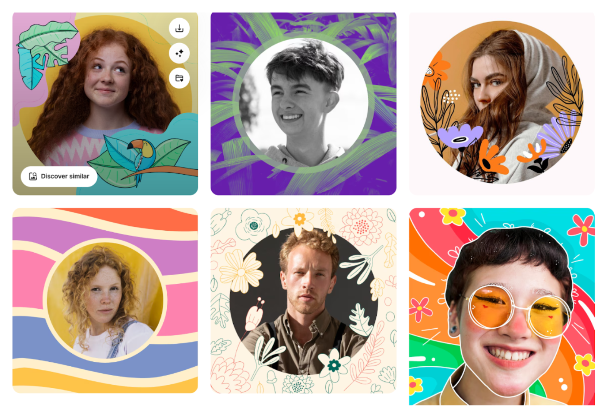

Artisticalize your headshot? (Part I)
A prompting journal and comparison between GPT-5 and gemini 2.5 flash
Background
I have always wanted to create an artistic profile photo that represents me but also includes creativity. As LLMs can now create great images, I decided to have them redesign my profile photo.
As a reference, below I include my profile photo (as it appears in the “About” section of this blog site) and my desired painting art style with artistic elements and frames surrounding the figure.
My Profile Photo

The Style I want (photos from freepik)
I was curious about which model performs better in image redesign tasks, so I decided to do a control test between two LLMs and understand which one is better at doing these types of image generation tasks. I knew that for image creation, specific tools such as Midjourney or Google’s Nanobanana may work better, but considering the experience of non tech savvy audiences who may interact with general chat agents more, I decided to use the two most popular general AI chat tools: ChatGPT and Gemini. Among all the LLMs models, the latest and most advanced ones include GPT-5 and Gemini 2.5 flash in ChatGPT and Google Gemini chats.
Prompts and Controlled Conditions
In my previous experience generating photos from an LLM based chat agent, I needed to do many rounds of prompting and often could not get the one that fits my needs. Reflecting now, I probably did not use careful prompting to craft the output. Therefore, this time I was using The Five Principles of Prompting described by James Phonexi and Mike Taylor in Prompt Engineering for Generative AI to direct my prompts. The following table includes the explanation of each principle from the book and how I used it to create my initial prompt for redesigning my profile photo.
Table 1. Initial Prompts Sent to GPT-5 and Gemini 2.5 flash Following the Five Principles of Prompting
| Prompt Engineering Principle | Explanation (by Phonexi & Taylor) | My Prompting Strategy (prompts and commands I sent to LLMs) |
|---|---|---|
| Give Direction | “Describe the desired style in detail, or reference a relevant persona” | Redesign my current profile photo (I’ll upload it later) and make it look artistic. The desired color style of the photo is bright and shows creativity. I want the color palette to be a mix of purple, pink, yellow, blue but in light intensity. |
| Specify Format | “Define what rules to follow, and the required structure of the response” | Return five design options in .jpg format. |
| Provide Examples | “Insert a diverse set of test cases where the task was done correctly” | I’ve included several examples attached here. (Sample headshot photos from freepik) |
| Evaluate Quality | “Identify errors and rate responses, testing what drives performance” | I gave feedback and evaluation for further improvement in multiple rounds of follow up conversations, for example: I like the color and elements added, but this cartoon style seems to make people look older than they should. The character in this photo is 23 years old. Also this does not necessarily have to be in cartoon style. You may keep the realistic character. Now redesign based on the suggestions, return 4 designs, 2 in cartoon style and 2 not. I like the fourth one in terms of the frames and how it keeps the background, but I also like number 3 for the color. Try mixing the two. DO NOT alter any object or characteristics of the person in the image including clothes style and color. |
| Divide Labor | “Split tasks into multiple steps, chained together for complex goals” | I gave the instruction first then followed up with my original headshot and more detailed instructions on the occasion, restrictions, explanations on design plan etc. I asked for a rough redesign first and then adjust the details and colors. Follow up after initial prompt: This is my headshot. Follow the above instructions to redesign it. By redesign I mean adding frames and small elements and changing the color of the image. DO NOT change the characteristics of the person in the image. This will be used for a design portfolio, so the attire can be creative but don’t be too informal. [attached my profile photo] |
To control the conditions, I used the same prompts that gave out initial instructions and reference photos for both gpt-5 and gemini 2.5 flash. I also kept my goal or result expectations on the two models similar to the sample images, though I had to give different feedback on the various outputs the two models provided back. I sent the initial prompts at the same time of the day and continued conversations with one model while the other was generating or processing answers.
Processes and Results Comparing Two Models
In this section, I will reflect on my experience prompting and evaluating the two models to redesign my profile photo based on my imagined style.
GPT-5: Slow start, Fast Improvement GPT-5 had a long processing time, missed instructions on formatting and lacked text explanations along with images generated.
GPT-5 seemed to misunderstand formatting commands: After my initial prompt, which I mentioned that the photo to be redesigned will be uploaded later, GPT-5 already started to generate a photo using the two sample images, and I got a combined collage that was not myself at all but the figure in the sample photo. GPT-5 misunderstood the single person headshot to be my photo.